I tema 2 var vores mål, at lave en hjemmeside baseret på stile ved brug
af grundlæggende web. Min opgave har været, at lave en hjemmeside i stil
af modern futiristic webdesign, men da jeg personligt ikke så mig selv i
det stildesign, valgte jeg at ligge fokus på min egen stil og
kreativitet – og lægge større fokus på selve udførslen af opgaven.
Mit arbejde udførte jeg ved brug af wireframes, vscode, html og css.
Det lærte mig lærte mig vigtigheden af specifikt grids i forbindelse
med wireframes. Det har senere været gavnligt for mig for, at få skabt
struktur på mine sider i efterfølgende opgaver – så som denne, og så
har det en væsentlig vigtighed i selve designet. Min udviklingsprocess
med udførsel af grids kan ses i illustrationen ovenfor.
Basic UX
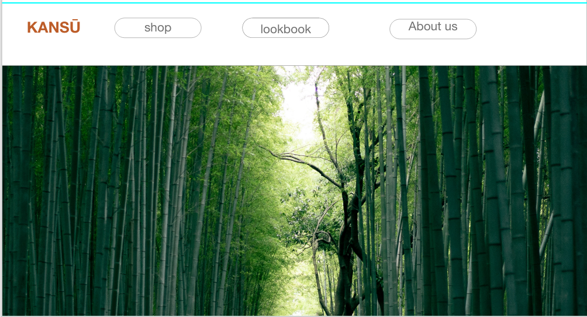
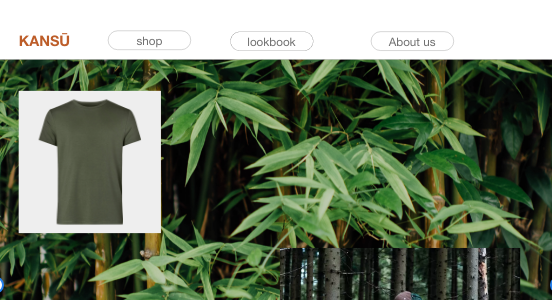
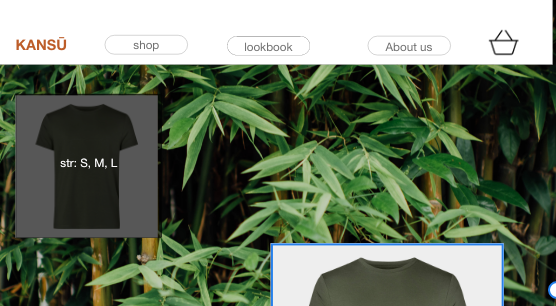
I tema 3 var vores mål, at designe en prototype af en webshop så den var
brugervenlig. Min rolle var først, at opfinde en eksisterende
virksomhed, og herefter kreere et design, der både er flot og
overskueligt visuelt og funktionelt.
Jeg udførte opgaven ved hjælp af Adobe XD og Photoshop. Mit arbejde
med Adobe XD har været meget lærerigt, og det har været et ideelt
værktøj for mig at benytte i mine opgaver om webdesign og redesign, da
det giver en god ”skitse” af designet, inden opgaven fuldføres.
Fremgangsprocessen illustreres ovenfor.
Basic Animation
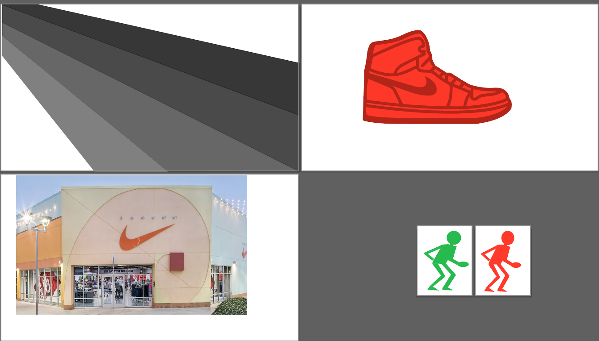
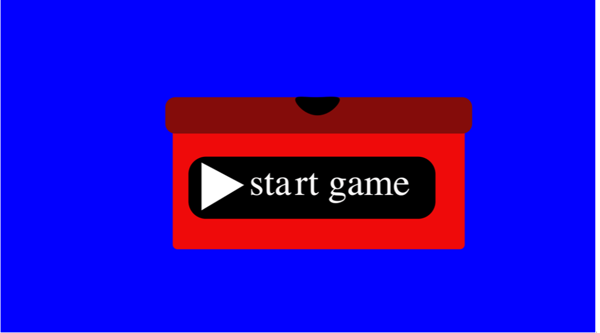
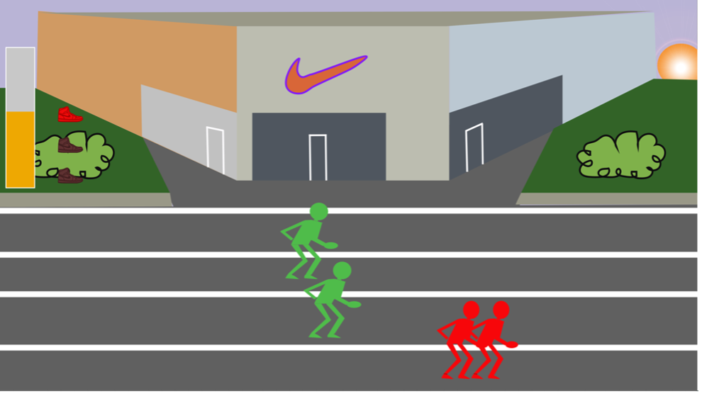
Målet i dette tema var, at lave et spil fra bunden. Min opgave var i
forbindelse med grundlæggende animation, at kreere et spil der
indeholdte bevægende elementer samt et pointsystem, liv og
slutside.
Jeg blev i forbindelse med opgaven introduceret til Javascript, men
benyttede også værktøer som CSS, Illustrator og HTML til udførslen af
spillet. Det lærte mig, at Javascript er essentielt når man arbejder
med animationer, da det blandt andet kan gøre elementer bevægelige og
responsive. Det har også været lærerigt, at arbejde med CSS og HTML i
forbindelse med spil, da der er mange variabler, jeg ikke kendte til –
og nu kan bruge i fremtidige projekter, da det kan bidrage til nyttige
funktioner på blandt andet hjemmesider. Illustrator har været godt, at
arbejde med, da det er et godt værktøj til, at tegne og kreere
elementer.
Redesign
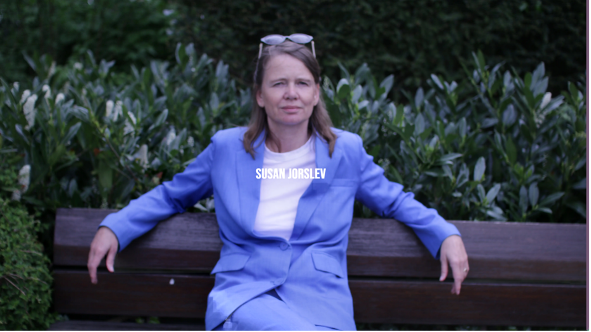
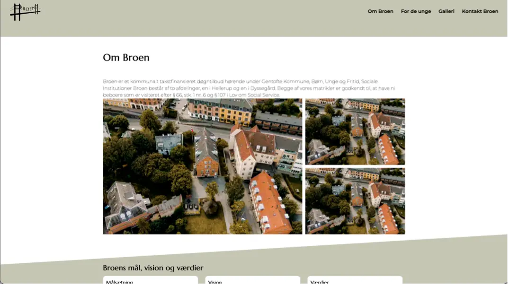
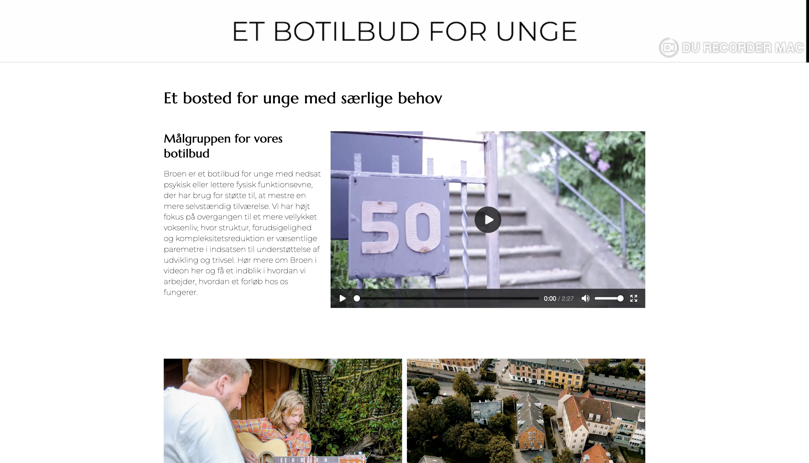
Dette tema inkluderer to opgaver. I den første opgave ”Pilotsite”,
skulle vi lave en pilotvideo om en person, med en vis form for
passion.
I den anden opgave ”Redesign og temadokumenation” skulle vi arbejde
med redesign af en hjemmeside for en lille virksomhed, og hertil lave
en reklame video. Da det var gruppeopgave, valgte vi i vores gruppe, i
opgaven ”redesign og temadokumentation” at arbejde med opholdsstedet
”Broen”. Vi lavede sammen et wireframe, og herefter interviewede samt
filmede vi forstander Annette Seeland. I opgaven ”pilotsite”
interviewede vi Susan Jørslev, der har en passion for feminisme.
Herefter fordelte vi arbejdet, og mine primære opgaver har været, at
opbygge siden ”om broen” og redigere reklame filmen samt pilotvideoen.
I mit arbejde har jeg benyttet Premier Pro, HTML, Gethub og CSS. Mit
arbejde med Gethub har givet mig indblik i vigtigheden, af et godt
fundamentalt gruppearbede ifa. arbejdsfordeling. Også Premier Pro har
været essentielt for både reklamefilmen og pilotvideoen, da det er et
godt værktøj, da man kan tilkoble lydfiler til videofilen. Det er
noget, jeg ser frem til, at kunne arbejde mere med, i mine fremtidige
videoprojekter.
Portfolio
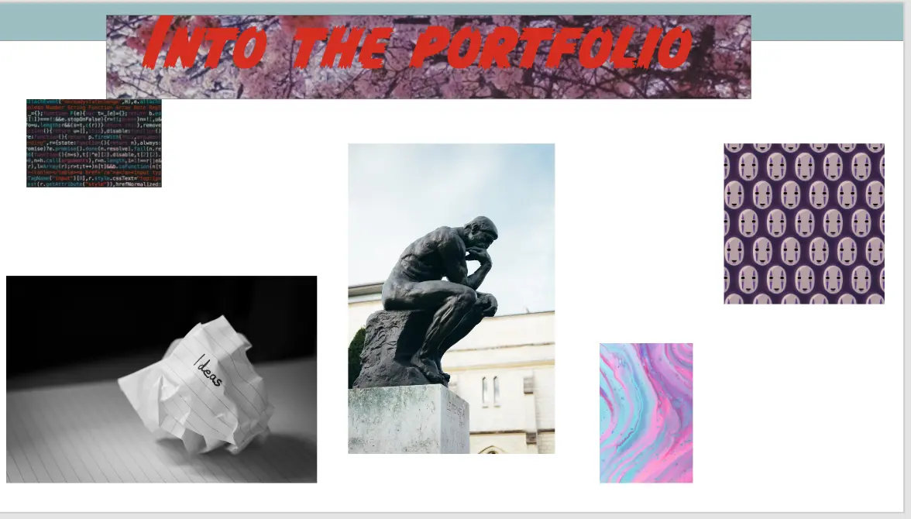
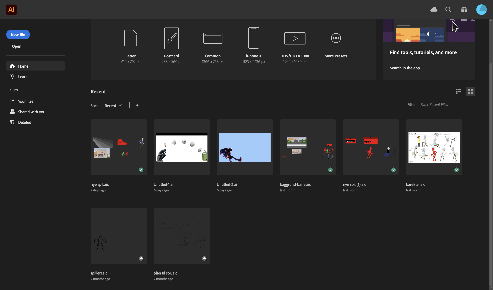
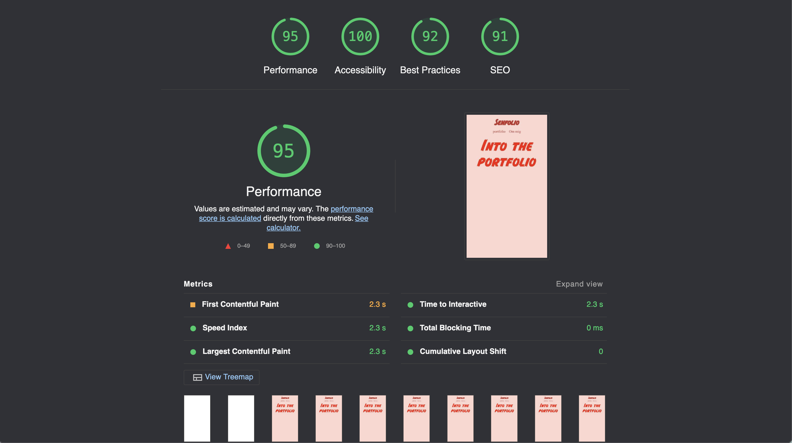
Mit mål i opgave i tema 6 har været, at udarbejde et portfolio website
der redegører for, hvad vi har lært på vores første semester.Min opgave har været, at lave et website med indhold af en forside,
en portfolio med oversigt over opgaver samt en ”om mig” side. Jeg
udførte opgaven ved hjælp af Adobe XD, Photoshop, Illustrator, HTML,
CSS og Javascript. Mit arbejde med Illustrator har været et godt
værktøj for mig, når jeg har skulle sammensætte billeder, og det er et
godt værktøj til opgaver, hvor tegning og skrivning er essentielt –
som i mit arbejde med grundlæggende animation.